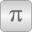

ThermalLibrary with models for connecting thermal models |
Package Contents
|
LinearTemperatureCoefficient20 (1/K) Linear temperature coefficient with choices |
|
|  |
Material Constants |
|
Converts alpha from temperature 1 (default 20 degC) to temperature 2 |
|
|
Converts resistance from reference temperature to an actual temperature |
|
|
Converts a value (e.g. resistance) from reference temperature to an actual temperature |
|
|
Thermal parts of asynchronous induction machines |
|
|
Thermal parts of synchronous induction machines |
|
|
Thermal parts of DC machines |
|
|
Thermal ambient for transformers |
Information
This information is part of the Modelica Standard Library maintained by the Modelica Association.
Thermal concept
Each machine model is equipped with a machine-specific conditional thermalPort.
If useThermalPort == false, a machine-specific thermal ambient prescribing constant temperatures is used inside the machine.
If useThermalPort == true, a thermal model or machine-specific thermal ambient prescribing the temperatures has to be connected from outside.
On the other hand, all losses are dissipated to this internal or external thermal ambient.
The machine specific thermal connector contains heatPorts
for all relevant loss sources of the machine type, although some of the loss sources are not yet implemented;
these heatPorts are left unconnected inside the machine, i.e., the HeatFlowRate is zero,
but they have to be connected to a constant temperature source in the internal or external thermal ambient.
Simple machine-specific thermal ambients for constant temperatures (useTemperatureInputs == false)
or temperatures prescribed via signal inputs (useTemperatureInputs == true) are provided in this package.
Loss sources
Up to now, only Ohmic losses in stator and rotor windings are implemented. They are modeled as linearly temperature dependent resistors:
ROperational = RRef * (1 + alphaRef * (TOperational - TRef))
Parameters:
- Resistance
RRefat reference temperature - Reference temperature
TRef - Linear temperature coefficient
alpha20at 20°C - Operational temperature
TOperational(ifuseThermalPort == false; otherwise, the operational temperature is provided via the heatPort) - Nominal temperature
TNominal(required for DC machines to calculate the turns ratio)
The linear temperature coefficient alpha20 at 20°C = 293.15 K has to be converted to reference temperature TRef:
alpha20
alphaRef = -------------------------------
1 + alpha20 * (TRef - 293.15)
For this reason, the function convertAlpha is provided. In sub-package Constants linear temperature coefficients at 20°C for commonly used materials are defined.
Backwards compatibility
- The default / start values of all resistances are left unchanged.
- The default / start values of all reference temperatures are set to 20°C.
- The default / start values of all linear temperature coefficients are set to 0.
- The default / start values of all operational temperatures are set to 20°C.
- The default / start values of all nominal temperatures are set to 20°C.
Machine specific thermalPorts
Asynchronous induction machine with squirrel cage
heatPortStatorWinding[m]: m=3 heatPorts for the m=3 stator phasesheatPortRotorWinding: heatPort for the rotor cageheatPortStatorCore: stator core losses (not yet fully implemented)heatPortRotorCore: rotor core losses (not yet connected/implemented)heatPortStrayLoad: stray load lossesheatPortFriction: friction losses
Asynchronous induction machine with slipring rotor
heatPortStatorWinding[m]: m=3 heatPorts for the m=3 stator phasesheatPortRotorWinding[m]: m=3 heatPorts for the m=3 rotor phasesheatPortBrush: brush losses (not yet connected/implemented)heatPortStatorCore: stator core losses (not yet fully implemented)heatPortRotorCore: rotor core losses (not yet fully implemented)heatPortStrayLoad: stray load lossesheatPortFriction: friction losses
Synchronous induction machine with permanent magnets
heatPortStatorWinding[m]: m=3 heatPorts for the m=3 stator phasesheatPortRotorWinding: conditional (useDamperCage=true/false) heatPort for the damper cageheatPortPermanentMagnet: permanent magnet losses (not yet connected/implemented)heatPortStatorCore: stator core losses (not yet fully implemented)heatPortRotorCore: rotor core losses (not yet connected/implemented)heatPortStrayLoad: stray load lossesheatPortFriction: friction losses
Synchronous induction machine with electrical excitation
heatPortStatorWinding[m]: m=3 heatPorts for the m=3 stator phasesheatPortRotorWinding: conditional (useDamperCage=true/false) heatPort for the damper cageheatPortExcitation: electrical excitationheatPortBrush: brush lossesheatPortStatorCore: stator core losses (not yet fully implemented)heatPortRotorCore: rotor core losses (not yet connected/implemented)heatPortStrayLoad: stray load lossesheatPortFriction: friction losses
Synchronous induction machine with reluctance rotor
heatPortStatorWinding[m]: m=3 heatPorts for the m=3 stator phasesheatPortRotorWinding: conditional (useDamperCage=true/false) heatPort for the damper cageheatPortStatorCore: stator core losses (not yet fully implemented)heatPortRotorCore: rotor core losses (not yet connected/implemented)heatPortStrayLoad: stray load lossesheatPortFriction: friction losses
DC machine with permanent magnets
heatPortArmature: armature lossesheatPortPermanentMagnet: permanent magnet losses (not yet connected/implemented)heatPortBrush: brush lossesheatPortCore: armature core lossesheatPortStrayLoad: stray load lossesheatPortFriction: friction losses
DC machine with electrical (shunt) excitation
heatPortArmature: armature lossesheatPortExcitation: electrical (shunt) excitationheatPortBrush: brush lossesheatPortCore: armature core lossesheatPortStrayLoad: stray load lossesheatPortFriction: friction losses
DC machine with serial excitation
heatPortArmature: armature lossesheatPortSeriesExcitation: electrical series excitationheatPortBrush: brush lossesheatPortCore: armature core lossesheatPortStrayLoad: stray load lossesheatPortFriction: friction losses
DC machine with compound excitation (not yet implemented)
heatPortArmature: armature lossesheatPortShuntExcitation: electrical (shunt) excitationheatPortSeriesExcitation: electrical series excitationheatPortBrush: brush lossesheatPortCore: armature core lossesheatPortStrayLoad: stray load lossesheatPortFriction: friction losses
Transformers
heatPort1[m]: m=3 heatPorts for the m=3 primary phasesheatPort2[m]: m=3 heatPorts for the m=3 secondary phasesheatPortCore: iron core losses (not yet connected/implemented)